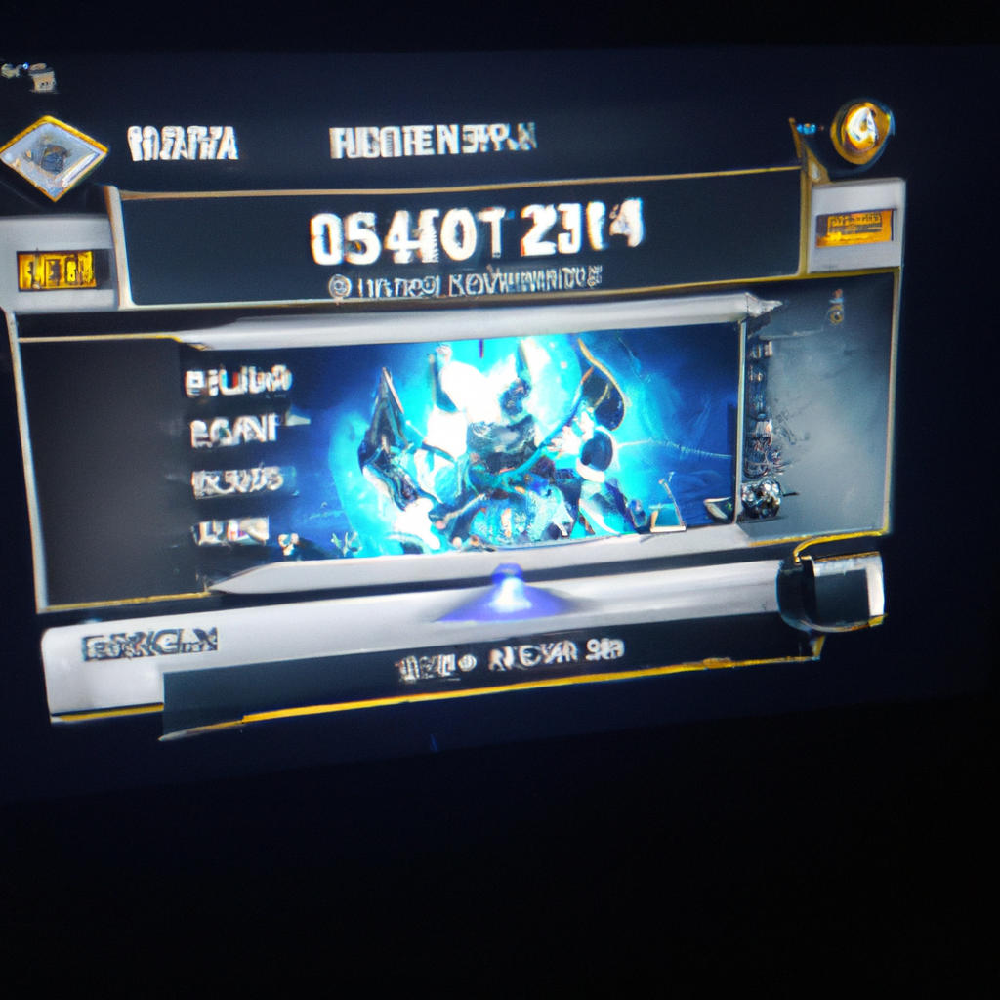

Starcraft is so unbalanced zerg is OP
The game of Starcraft has long been known as a game of imbalances and one-sidedness. With the release of the latest patch, zerg has been especially overpowered. Players who use zerg have been able to dominate their opponents with ease, leading to frustration and anger from those who are not using zerg. This has led to many discussions and debates about how to balance the game, so that all races can compete evenly. As a professional Starcraft player, I have seen the effects of the imbalance firsthand and can understand how it can be a turn-off for players. I believe that the game should be balanced for all races and look forward to the day when all races can compete on even terms.